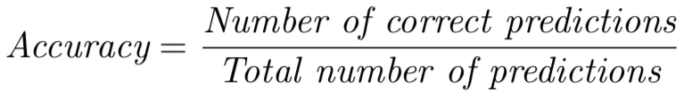
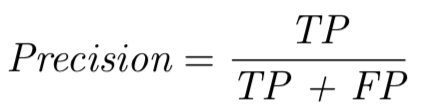
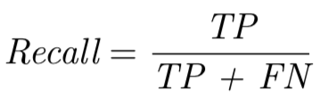
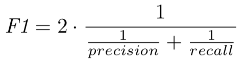
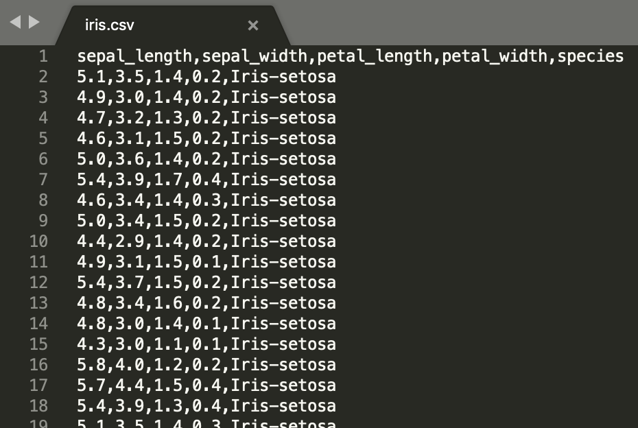
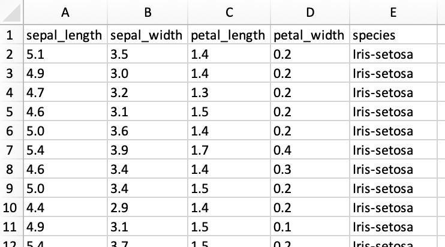

Here you can run machine learning experiments by uploading datasets in csv files and select algorithms to run on the datasets.
You can download some example datasets here.
Syntetic two-dimensional dataset with a circle inside a square
Upload Dataset ?
Loaded dataset: None
Select Algorithm
►
Set Hyperparameters ?
►
Data Pre-processing ?
Attributes:
Shuffle data:
Run Experiment ?
Result ?
Close
Accuracy
Accuracy, or classification accuracy, means the fraction of all predicted examples that were correctly predicted.
It is calculated as:

Consider the Iris dataset containing 150 examples. If we split the dataset into 80% training and 20% testing, the
test dataset contains 30 examples. If 29 of the 30 examples were correctly predicted, the accuracy is 96.67%.
Accuracy is a great metric if we have datasets that are reasonably class-balanced, meaning that we have roughly the
same number of examples from each class. This is the case for the Iris dataset which contains 50 examples from each class.
If a dataset is class-imbalanced, accuracy can give you a false sense of achieving a good result. Consider for example a
spam filtering dataset containing 198 examples of non-spam emails, and 2 examples of spam emails. An accuracy of 99% may seem
very high at first glance, but is actually the same accuracy we would get if we had a model with zero predictive ability only
returning the majority class for all predictions. This zero predictive model is sometimes referred to as ZeroR and can be
used as a baseline for accuracy comparisons.
Confusion Matrix
The confusion matrix describes the complete performance of a model. It is a matrix of the following format:
Predicted: Yes
Predicted: No
Actual: Yes
True Positives (TP)
False Positives (FP)
Actual: No
False Negatives (FN)
True Negatives (TN)
There are four important terms:
True Positives:The cases where the model predicted Yes and the actual output was also Yes.
True Negatives:The cases where the model predicted No and the actual output was also No.
False Positives:The cases where the model predicted Yes but the actual output was No.
False Negatives:The cases where the model predicted No but the actual output was Yes.
The confusion matrix not only tells us how many predictions we got wrong, but also where the errors are. Consider the following confusion matrix when
evaluating a model on the Iris dataset:
[0]
[1]
[2]
[0]
50
0
0
→ Iris-setosa
[1]
0
48
2
→ Iris-versicolor
[2]
0
0
50
→ Iris-virginica
The first row tells us that all 50 examples of Iris-setosa were correctly predicted (true positives). The second row tells us that 48
examples of Iris-versicolor were correctly predicted (true positives), and that 2 were incorrectly predicted as Iris-virginica
(false negatives). The third row tells us that all 50 examples of Iris-virginica were also correctly predicted (true positives).
The third column tells us that for Iris-virginica, all 50 actual examples were correctly predicted (true positives) but 2 other examples
were incorrectly predicted as belonging to Iris-virginica (false positives). The first and second columns tells us that there are no false
positivies for Iris-setosa or Iris-versicolor.
Precision, Recall and F1 score
From the confusion matrix we can calculate other metrics. F1 score is the harmonic mean between precision and recall. It tells us
how precise a model is (amount of correctly classified examples), but also how robust it is (does not miss many examples).
To calculate F1 score, we first need to calculate precision and recall:
Precision: Precision is calculated for each class, and measures how often the model is correct when examples are predicted as belonging to the class.
It is calculated as: 
Recall: Recall is calculated for each class, and measures what fraction of all examples belonging to the class that were correctly predicted.
It is calculated as: 
These can easily be calculated from a confusion matrix. From the example confusion matrix above we can calculate recall for Iris-virginica
by dividing the number of true positives in the third row (50) by the sum of that row (50). The recall for Iris-virginica is 1.00 (all examples
of Iris-virginica are correctly predicted). To calculate precision for Iris-virginica
we divide the number of true positives in the third column (50) by the sum of that column (52). The precision for Iris-virginica
is 0.96 (some other examples are incorrectly predicted as belonging to Iris-virginica).
When we have calculated precision and recall, we can calculate F1 score as:

F1 score is a balance between precision and recall, and is often a better measure of model performance than accuracy.
When running an experiment on a dataset, there are three options:
Use training data
Train-test-split (80%/20%)
5-fold Cross-Validation
When Use training data is selected, all examples in the dataset are used for both training and testing of the model.
Since we use all data, there is no risk that we miss important patterns in the data when training the model. The problem is that
we don't measure the generalization capabilities of the model, i.e. how good the model is at predicting unseen examples. We only
measure how effective an algorithm is for mapping input patterns to output patterns.
The second option is Train-test-split (80%/20%). In this case we randomly split the dataset into two sets, a training
set containing 80% of the examples and a test set containing 20% of the examples. Since the algorithm is trained on the training
set and evaluated on the test set, we get a measure of the generalization capabilities of the model. Depending on what examples
are selected for the test set in the random split, there is however a risk that we miss important patterns in the data when
training the model.
The third option is 5-fold Cross-Validation. In this case we randomly split the dataset into five subsets of roughly
equal size. The experiment is repeated five times, such that each time a different subset is used for testing and the other
subsets are used for training:
1
2
3
4
5
Blue subset is used for testing
Gray subsets are used for training
The final result is an average of the results from the five repetitions. When we use cross-validation,
we minimize the risk of missing important patterns in the data during training since all examples will be used for training in
four of five repetitions. The major drawback of cross-validation is that it is time consuming since we train and evaluate a
model five times. Cross-validation and train-test-split can also be problematic if we have few examples in the dataset.
Click ► to expand the Data Pre-processing section.
Data normalization
It is quite common that different attributes in the dataset have different range of values. The first attribute can for example
have a range from 0 to 1, and the second from -5 to 100. This can lead to neural networks having problems convering to stable
solutions since gradients may oscillate back and forth, and it can have a negative effect on many distance functions used in
k-Nearest Neighbor. Neural networks also generally prefer smaller attribute values to avoid weights explosion.
To get around this we can normalize the attribute values by subtracting the mean of the attribute and divide by the standard
deviation of the attribute.
Data shuffling
Sometimes, the examples in a dataset are ordered on which class they belong to. This is for example the case in the Iris dataset
which first contains 50 examples of Iris-setosa, then 50 examples of Iris-versicolor,
and finally 50 examples of Iris-virginica.
This can cause problems for some algorithms, for example neural networks. It is therefore best practice that we always randomly
shuffle the dataset before training a model. It is also important that the dataset is shuffled before we do a train-test-split or
cross-validation.
Experimenter supports datasets in csv format. The first line in the file can be a header, but it is not required. The following
lines are data examples containing all the attribute values separated by a comma, ending with the class value. Class values can be
either integers or strings. Note that Experimenter only supports classification and not regression, so all class values are treated
as categorical values. It cannot handle missing attributes, so all examples are required to have the same number of attributes.
Example: Iris dataset
The Iris dataset is a very famous dataset in machine learning. The dataset contains 150 examples of Iris flowers, divided into
the three species Iris-setosa, Iris-versicolor,
and Iris-virginica. The dataset is balanced with 50 examples of each class.
The purpose is to predict which species an example belongs to. There are four numerical attributes: width and height of the petal
leaves and width and height of the sepal leaves.
If we open the csv data file in a text editor, the first examples look like this:

It is easier to get an overview of the dataset if we open it in a spreadsheet application:

An interesting property of the dataset is that one class is linearly separable from the other two, but the latter two are not
linearly separable from each other.
Using the Iris dataset
The Iris dataset is built-in in the Experimenter for demonstration purpose. You can simply use it by clicking the
button.
Click ► to expand the Set Hyperparameters section.
Hyperparameters
Most machine learning algorithms can be tuned for different problems by modifying the values of the algorithm's hyperparameters.
A hyperparameter is a model configuration and needs to be set before training the model.
The problem is that we cannot know the best value for a hyperparameter on a given problem. We can use our experience and rules
of thumb to find a good starting point, then search for the best value by trial and error.
Web ML Demonstrator is a machine learning demonstrator running purely on the client browser. All algorithms
are implemented in JavaScript for the purpose of this demonstrator. They are not optimized for high performance and don't
have all the functionality of state-of-the-art implementations. The main purpose of this demonstrator is to be used as a
tool when teaching and explaining machine learning and machine learning related concepts.
Web ML Demonstrator is developed by Johan Hagelbäck, senior lecturer at Linnaeus University in Kalmar, Sweden. Contact details
for the developer is here.